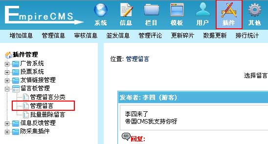
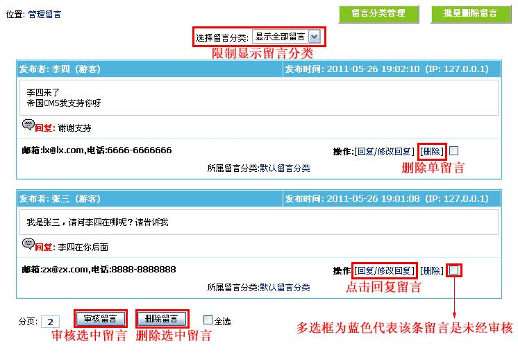
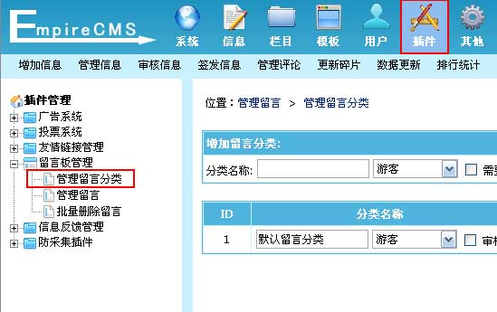
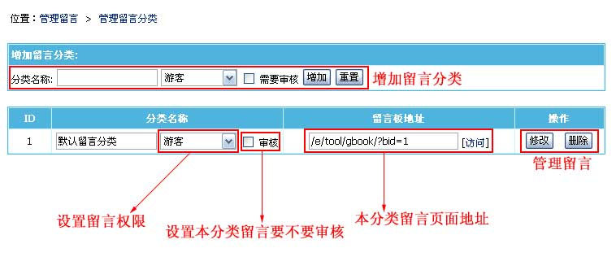
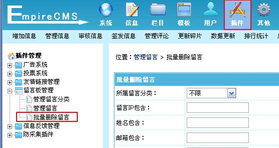
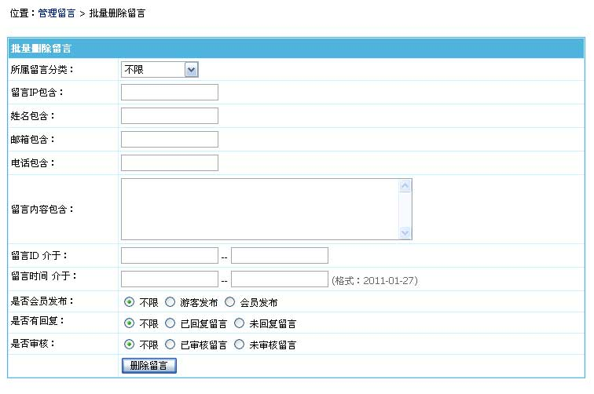

| 留言板管理：对网站留言板内容进行管理。 |
|
||
| 一、留言板系统说明 |
| 帝国CMS的留言板系统支持多分类，一个分类为一个单独的留言板。 |
| 前台各留言板的访问地址：“/e/tool/gbook/?bid=分类ID”。 |
| 留言板页面模板制作 |
| 后台>“模板”>“公共模板”>“留言板模板”里修改模板。（详细制作方法可以看美工手册） |
| 二、管理留言 | ||||||||||
| 1、登录后台，单击“插件”菜单，选择“管理留言”子菜单，进入管理留言界面： | ||||||||||
|  | ||||||||||
| 2、进入管理留言界面，如下图： | ||||||||||

|
| 三、管理留言分类 |
| 一个留言分类为一个单独的留言板。 |
| (一)、登录后台，单击“插件”菜单，选择“管理留言分类”子菜单，进入管理留言分类界面： |
|  |
| (二)、进入管理留言分类界面： |
|  |
| 1. 增加留言分类：在分类名称框中，输入留言分类名称，选择允许留言的最低会员组级别，选择留言是否需要审核，单击“增加”按钮。
2. 修改留言分类：在已增加的留言分类中，修改分类名称、允许留言的最低会员组级别及留言是否需要审核，单击“修改”按钮。 3. 删除留言分类：单击操作选项“删除”按钮，删除所在行的留言分类。 4. 访问留言版地址：在留言分类列表中，每条留言分类所在行均有留言板地址，单击[访问]按钮进行查看。 |
| 四、批量删除留言 | ||||||||||||||||||||||
| 按条件批量删除留言功能，清理留言更便捷。 | ||||||||||||||||||||||
| 1、登录后台，单击“插件”菜单，选择“批量删除留言”子菜单，进入批量删除留言界面： | ||||||||||||||||||||||
|  | ||||||||||||||||||||||
| 2、进入批量删除留言界面： | ||||||||||||||||||||||
|  | ||||||||||||||||||||||
|